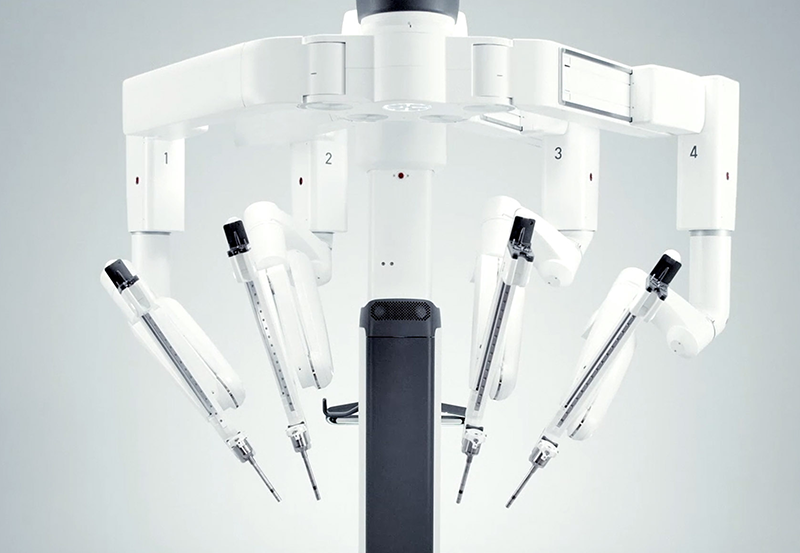

Mengapa Memilih Layanan Ini?
Layanan Second Opinion membantu pasien mendapatkan pandangan medis tambahan dari dokter spesialis terpercaya dengan dukungan teknologi dan standar internasional.

Dokter Ahli
Tim medis yang terdiri dari lebih dari 600 dokter umum dan 2.700 dokter spesialis dengan pengalaman luas.

Teknologi Modern
Didukung fasilitas dan teknologi medis terkini untuk membantu proses diagnosis dan pengobatan.
Standar Internasional
Pelayanan kesehatan yang mengikuti standar global dan akreditasi internasional.